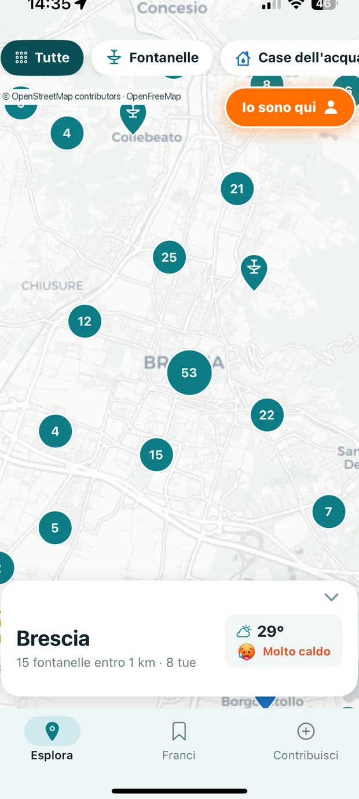
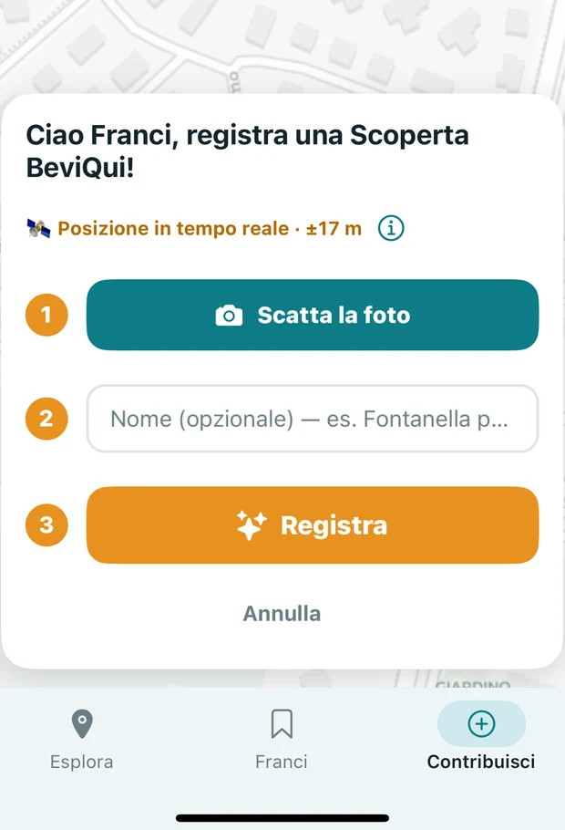
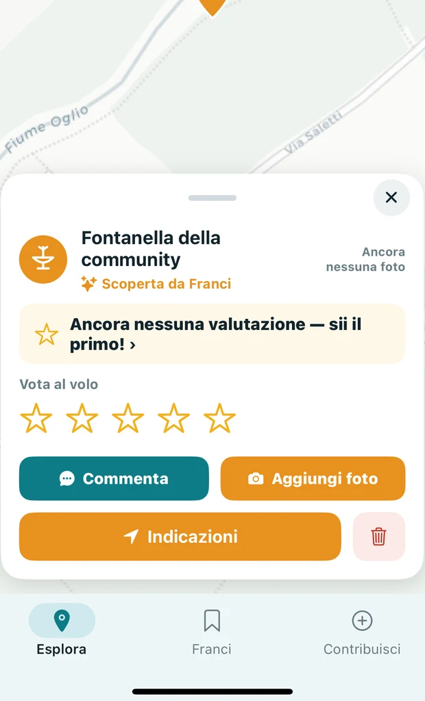
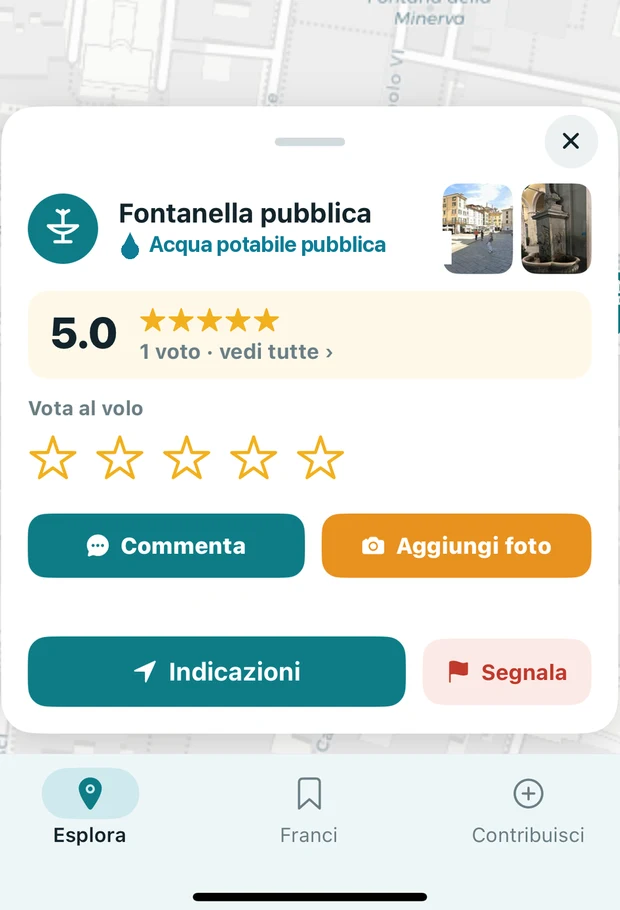

1
Apri la mappa
Vedi subito le fontanelle e le case dell'acqua intorno a te. Tocca un segnalino e parti, con le indicazioni passo passo.
BeviQui ti mostra le fontanelle e le case dell'acqua più vicine. Riempi la borraccia gratis, ovunque sei. Più borraccia, più pianeta.

Quante bottigliette hai comprato solo perché avevi sete?
L'acqua buona è già qui. Serve solo saperlo.
Fontanelle e case dell'acqua sono già pagate da noi. BeviQui te le mette in mano, dove sei adesso.
Le fontanelle aggiunte dalle persone arrivano con una foto vera, verificata prima di finire sulla mappa.
Niente account, niente pubblicità, niente vendita di dati. È un progetto civico, nato in Italia.
Dati OpenStreetMap, misurati ad agosto 2026 · a Brescia e provincia BeviQui funziona anche offline.
Apri, guarda, bevi. E se scopri una fontanella che manca, falla esistere per tutti.
Vedi subito le fontanelle e le case dell'acqua intorno a te. Tocca un segnalino e parti, con le indicazioni passo passo.

Scatti la foto, dai un nome, tocchi Registra. La posizione la prende il GPS e la foto la verifichiamo in un lampo.

Appena verificata compare sulla mappa con il tuo nome. Da quel momento ci beve chiunque passi di lì.
Ogni fontanella aggiunta serve a tutti — a chi corre, a chi va in bici, a chi porta a spasso il cane, a chi è di passaggio.

Su BeviQui ogni fontanella ha una faccia: la foto scattata da chi c'è stato, le stelle di chi l'ha provata, la strada per arrivarci.
Studenti, runner, ciclisti, chi ha il cane, chi lavora fuori, chi è in vacanza: l'acqua serve a tutti, ogni giorno.
Ogni borraccia riempita è una bottiglietta in meno in giro per il mondo.
Lascia a casa il peso dell'acqua: la trovi dove sei, quando ti serve.
Cammini, corri, giri con i bambini o sei di passaggio: l'acqua buona la trovi lo stesso.
L'acqua pubblica è nostra. BeviQui ce lo ricorda, una fontanella alla volta.
Conosci una fontanella che non c'è ancora? Aggiungila con una Scoperta BeviQui e falla esistere per tutti.
punti di acqua pubblica già sulla mappa, in tutta Italia
e crescono ogni giorno con le persone come te.
BeviQui è già su iPhone. Su Android arriva presto: lascia la tua email e sei tra i primi. Inquadra il codice con la fotocamera e comincia subito a trovare l'acqua intorno a te.
Gratis, senza registrazione, senza pubblicità.
 Inquadra e scarica
Inquadra e scarica
Non servono soldi: servi tu. Tre gesti da un minuto che fanno crescere la mappa dell'acqua pubblica.
Lasciaci la tua email: ti avvisiamo appena BeviQui arriva nella tua zona, con le nuove fontanelle vicino a te. Solo acqua buona.
Rispettiamo la tua privacy. Ti scriviamo solo quando conta.
Sì, al 100%. Nessun costo nascosto.
No. Apri e usi tutto subito. Ti chiediamo il nome solo dopo il tuo primo contributo, per ringraziarti.
Sono punti di acqua potabile pubblica gestiti dagli enti locali. Dove serve, la community segnala lo stato.
Sì: BeviQui mostra i punti di acqua potabile pubblica di tutta Italia, dal vivo — sono già oltre 68.000 sulla mappa e crescono ogni giorno con la community. A Brescia e provincia funziona anche offline.
Dalle mappe pubbliche di OpenStreetMap e dai contributi della community.
BeviQui è l'app gratuita che mostra sulla mappa le fontanelle di acqua potabile pubbliche in Italia. Non è il prodotto per animali dal nome simile: è un'applicazione per iPhone e Android.